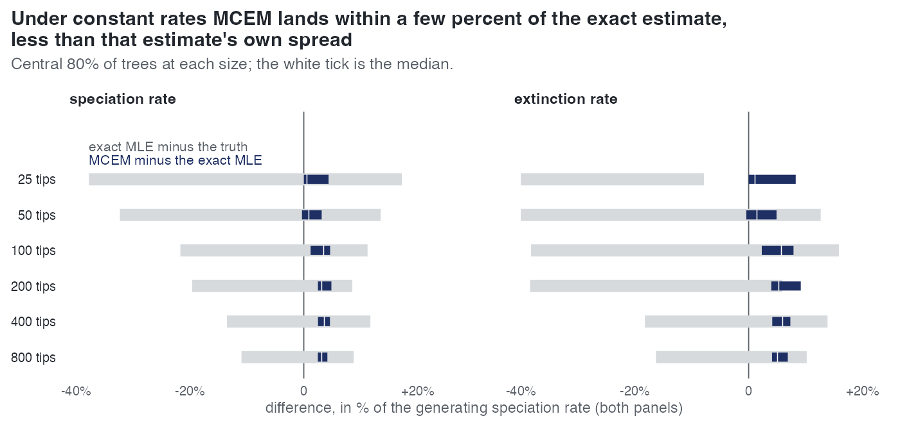
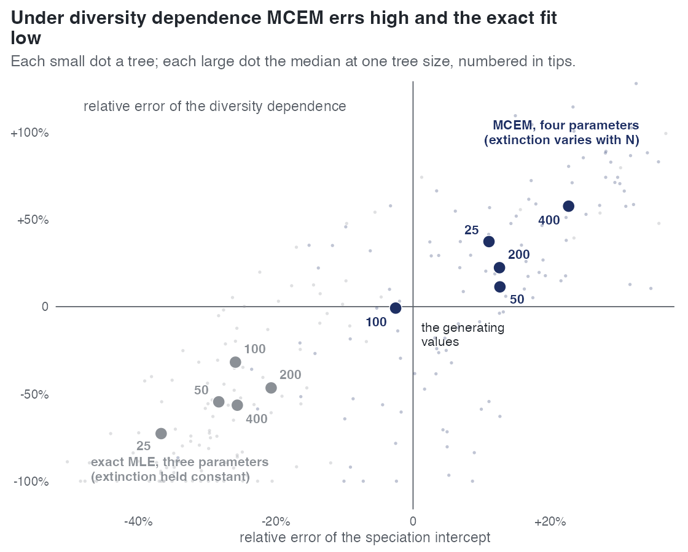

S — How many tips does the estimator need, against the exact MLE of the same tree?
| Status | complete for cr and dd; the ned arm stopped (3 usable fits of 23, no merged table) |
| Package build | 64edf63 and a87de1c (the two builds in the 2026-10-02 build audit, which found them identical to a clean build except for the ned thinning random stream; S's cr and dd arms do not use that proposal) |
| Driver / analysis | sim/S-samplesize.R, sim/S-analyse.R; figures sim/figures-study.R |
| Data | results/S/cr/fits.csv (360 rows), results/S/dd/fits.csv (125 rows), summary manuscript/tables/S-summary.csv; results/S/ned/jobs/ (23 files) |
Question
E1 checks MCEM against the exact MLE only up to 100 tips. S holds the generating parameters fixed and changes only the amount of data, 25 to 800 tips, so that the curve is a statement about sample size: how close MCEM gets to the exact estimate of the same tree, how close both get to the generating value, and at what size each reaches a usable accuracy. Its ned arm, which failed at 200 tips and above, is what led to the feasibility map E7; its cr fits ending on the clock at 800 tips led to E9.
Design
| parameter | cr |
dd |
meaning |
|---|---|---|---|
| tips | 25, 50, 100, 200, 400, 800 | 25, 50, 100, 200, 400 | target size |
| trees per size | 30 | 25 | |
| tree draw | exactly n tips, TreeSim::sim.bd.taxa |
crown age calibrated per size (6.53, 6.53, 7.97, 8.38, 9.99) so the median lands on the target (realised medians 31, 51, 109, 191, 414) | |
| rates | \(\lambda\) = 0.5, \(\mu\) = 0.2 (turnover 0.4) | \(\lambda\)0 = 0.8, \(\mu\)0 = 0.2, \(\gamma\)N = 0, K = 2n so \(\beta\)N = -0.3/n | K tied to n so every tree sits at the same half of its capacity |
| proposal | surrogate | surrogate | the package's recommended setting |
| draws | grown by the mc_error rule from 200 to a cap of 1600 ("adaptive"); a second arm at 200 fixed |
grown, 200 to 1600 | |
| stopping rule | mc_error |
mc_error |
|
| exact reference | DDD::bd_ML per tree |
DDD::dd_ML per tree (three parameters, \(\mu\) constant); one 50-tip reference returned the failure code and is dropped |
|
| link, sampling | linear, \(\rho\) = 1 | linear, \(\rho\) = 1 |
The two dd estimators do not maximise the same function (dd_ML holds \(\mu\) constant, emphasis fits \(\gamma\)N as well), so each is compared with the generating value rather than with the other.
Pre-set rule
S has no design entry in 00-design.md and no rule fixed before its data; its design is the driver header. The supplement and report read it against a working box: within 10% bias and 25% RMSE of the generating value, with bias and RMSE in % of the generating speciation rate. That box is used below, as a reading and not as a registered rule.
Results
cr, MCEM against the exact estimate. The central 80% range of (MCEM - exact) is 0.08-0.10 of the range of (exact - truth) for speciation at every size, and 0.26, 0.10, 0.10, 0.12, 0.10, 0.10 for extinction at 25-800 tips. MCEM sits slightly above the exact estimate: median +0.6, +0.9, +3.5, +3.2, +3.7, +3.2% of the speciation rate on speciation, +1.2, +1.5, +5.8, +5.4, +6.0, +5.1% on extinction.

cr, against the generating value (draws grown; % of the generating speciation rate):
| tips | speciation bias / RMSE MCEM | exact | extinction bias / RMSE MCEM | exact | fits on the clock | median s per fit |
|---|---|---|---|---|---|---|
| 25 | -10.4 / 25.0 | -12.3 / 25.4 | -27.8 / 33.1 | -31.2 / 35.0 | 0 of 30 | 225 |
| 50 | -10.4 / 21.9 | -11.5 / 23.4 | -18.7 / 33.1 | -20.8 / 35.4 | 2 | 500 |
| 100 | -1.8 / 13.7 | -5.0 / 15.1 | -3.4 / 19.9 | -8.8 / 22.5 | 22 | 1875 |
| 200 | -1.5 / 9.8 | -4.9 / 11.0 | -5.8 / 16.2 | -11.6 / 19.9 | 24 | 3739 |
| 400 | +2.9 / 11.3 | -0.6 / 11.2 | +1.6 / 12.6 | -4.1 / 13.9 | 29 | 5672 |
| 800 | +1.7 / 7.0 | -1.7 / 7.2 | +2.3 / 10.9 | -3.1 / 11.7 | 30 | 5681 |
The cells from 100 tips on are clock-limited (the clock ended 73-100% of fits). At 400 and 800 tips the draws reached 1013 and 675, not the cap of 1600. The exact estimate returns extinction at zero on 63% and 57% of trees at 25 and 50 tips, MCEM on 13% and 3%. With 200 draws held fixed the estimates drift upward from 100 tips: speciation bias +3.3, +4.3, +9.3, +8.4% and extinction +4.4, +3.3, +11.6, +12.6% at 100-800 tips, at 255-2371 s a fit.
dd (draws grown; median of fitted over generating, MCEM / exact):
| tips | intercept | slope | extinction | intercept bias / RMSE, MCEM vs exact | stop: converged / max_iter / clock |
|---|---|---|---|---|---|
| 25 | 1.11 / 0.63 | 1.37 / 0.27 | 0.00 / 0.00 | +27.7 / 48.8 vs -33.1 / 36.5 | 11 / 14 / 0 |
| 50 | 1.11 / 0.72 | 1.11 / 0.45 | 0.00 / 0.00 | +15.8 / 25.5 vs -28.5 / 57.5 | 7 / 17 / 0 |
| 100 | 0.97 / 0.74 | 0.99 / 0.68 | 0.00 / 0.00 | -0.5 / 11.7 vs -11.9 / 41.7 | 3 / 22 / 0 |
| 200 | 1.13 / 0.79 | 1.22 / 0.53 | 0.32 / 0.00 | +13.9 / 17.2 vs -6.2 / 34.2 | 0 / 23 / 2 |
| 400 | 1.23 / 0.74 | 1.58 / 0.44 | 1.67 / 0.03 | +22.4 / 23.7 vs -17.5 / 26.9 | 2 / 18 / 5 (clock-limited) |
MCEM returns extinction at exactly zero on 92, 76, 48, 12 and 0% of trees at 25-400 tips; the exact dd_ML on nearly every tree at every size. Extinction bias / RMSE is -24.9 / 24.9 (MCEM) against -24.0 / 24.2 (exact) at 25 tips, -4.9 / 20.7 against -12.8 / 23.2 at 200, +15.5 / 19.7 against -16.1 / 20.6 at 400. Most dd fits ended on the 100-iteration cap, so the 200- and 400-tip numbers are those of unfinished fits.

ned arm. 23 job files at 100, 200 and 400 tips: 20 failed in their first E-step (e_step_failure, 0 iterations) and 3 ended on their clock after 31, 39 and 1 iterations, with \(\hat{\beta}\)_ED at 0.80, 0.74 and 0.73 of the generating value on effective samples of 10.6, 10.5 and 19.2. Not a recovery measurement.
Conclusion
Read against the 10% / 25% box (not a registered rule): MCEM arrives at 100 tips for both cr rates and for the dd intercept and slope, and at 200 tips for the dd extinction rate; the exact dd_ML does not reach the box on the intercept at any size tested. MCEM is not worse than the exact estimate on any cell and has the smaller bias on most. Under cr MCEM lands on the exact estimate to a tenth of that estimate's own spread, offset upward by 1-6% of the speciation rate. What S does not show: the cr cells from 100 tips and the dd cell at 400 are clock-limited and the dd fits from 50 tips mostly ended on the iteration cap, so those are readings of unfinished fits; the dd intercept leaves the box again at 200 and 400 tips (+13.9 and +22.4% bias) on such fits. The fixed-draw arm shows the draw count must grow with the tree. S covers turnover 0.4 (cr) and 0.25 (dd) at complete sampling only.
Related
- E1 — the same comparison at 20-100 tips over turnover 0-0.9.
- E7 — the feasibility map, built because S's
nedarm failed from 200 tips. - E9 — the stopping rule, examined because S's
crfits ended on the clock at 800 tips. - E4, E15 — cost; S's per-fit times are on the cost figure.
- E38 — the exact profile likelihood of extinction by turnover and size.